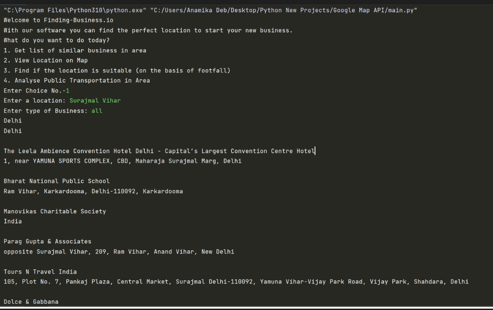
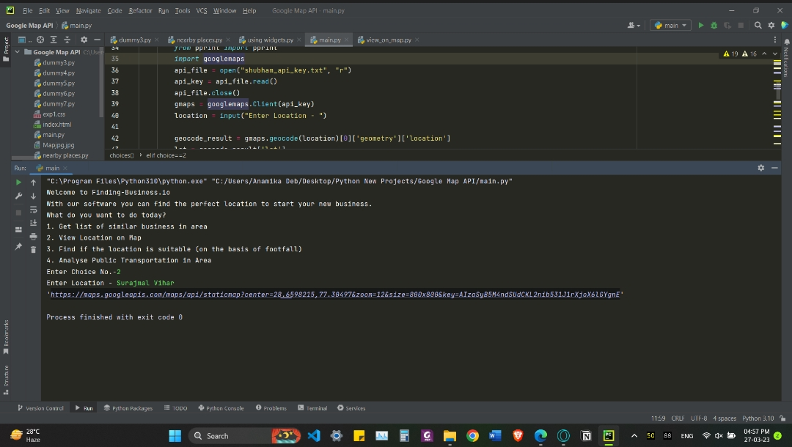
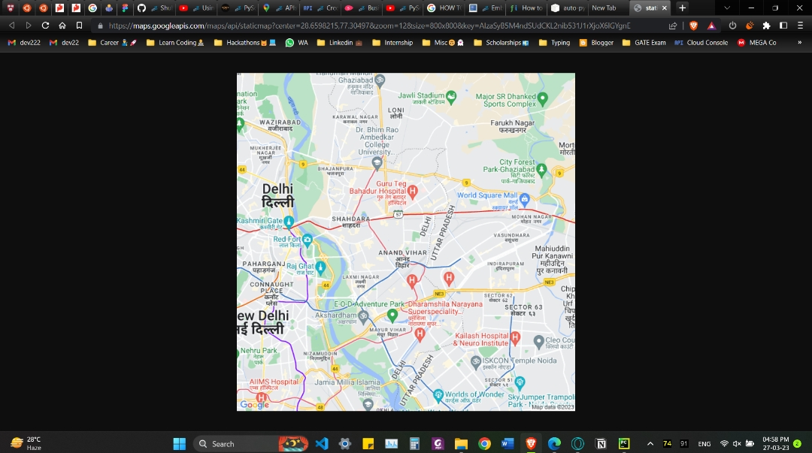
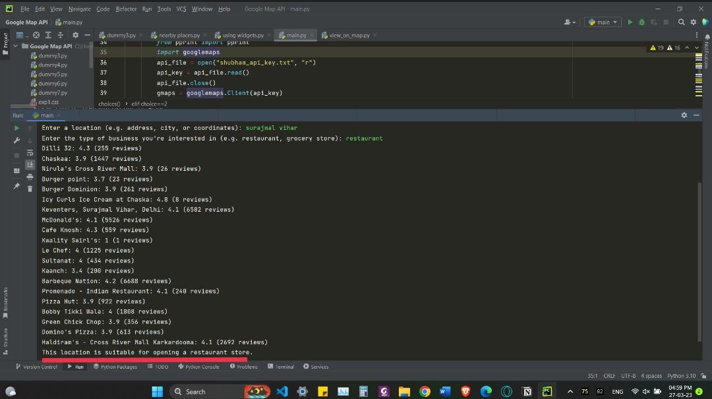
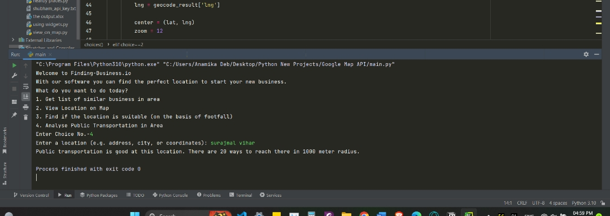

Welcome to our website
you know not all businesses out there get success
some face loses and have to shut down. The key to setup your business at a good working place is Information/DATA. The more you get information the more you can enhance your program. In our program we are taking information about businesses through Google map API which include Root API, Places API, Distance Matrix API, Map-Static API.To get more information about local business which is non accessable on Internet we will be conducting Surveys at local level in which people would be giving reviews about local businesses around their area. That is our future target to boost our data and develop our program with more efficiency.
Did you ever wondered why business model fails ?
There are multiple factors that are responsible for such loses and one of the major is WRONG BUSINESS LOCATION
So which location is suitable for your Business?
Some factors to be consider for chosing business location are :-
- Analyse Competition
- Footfall on Business Area
- Public Transportation Facility in that Area
- Public Reviews
The User is provided with the location where their Business have high chance of of being prosporous.One of the most popular tools for accessing location-based data is the Google Maps API. It provides us with information about a given location, including geographic features, traffic patterns and details of other businesses in the area. By using the Google Maps API, we can identify potential competitors, and make informed decisions about where to locate new stores. By analyzing foot traffic data, we can determine whether a given location is likely to attract a significant number of customers. Another important factor to consider when opening a new store is competition. The Google Maps API can be used to identify existing businesses in the area. By analyzing this data, businesses can determine whether the local market is saturated and whether there is room for a new player in the market. Using real-time data, we can monitor traffic patterns, weather conditions, and other variables that can impact store performance. This real-time data can be used to make informed decisions about marketing strategies, ensuring that the store is always operating at peak efficiency
Below you can see how our program works and on which basis it works:
- Getting list of Businesses in Searched Area
 - View Location of Searched Area on Map
  - Find if the Location is Suitable to set Business on the Basis of Footfall
 - Analyze Public Transpotation around the Searched Area
